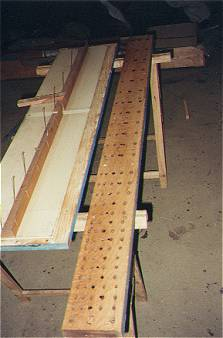

Clavier : |
Grand Orgue |
Jeu : |
Fourniture III-V |
[ Relevé des
faux-sommiers de la Gambe 8' d'Hugues BEAUCOURT ]
[ Tailles du jeu ]
Composition | ||||||
|---|---|---|---|---|---|---|
| C1 | C2 | C3 | G3 | C4 | G4 | C5 |
| 4' | 4' | 5'1/3 | 5'1/3 | 8' | ||
| 2'2/3 | 2'2/3 | 2'2/3 | 4' | 4' | 5'1/3 | |
| 2' | 2' | 2' | 2' | 2'2/3 | 2'2/3 | 4' |
| 1'1/3 | 1'1/3 | 1'1/3 | 1'1/3 | 2' | 2' | 2'2/3 |
| 1' | 1' | 1' | 1'1/3 | 2' | ||
Ce jeu est entièrement neuf et a été reconstitué par Laurent PLET. La fourniture a été remplacé une première fois par une gambe de huit pieds en 1898 par Hugues BEAUCOURT, puis une seconde fois par une quinte placée par Maurice PUGET. Il n'a pas été difficile de reconstituer avec certitude la composition originelle, Hugues BEAUCOURT s'étant contenté de plaquer la chape du sommier pour l'adapter aux perces de sa gambe.
|
 | |||||||||||||||||||||||||||||||||||||||||||||||||||||||||||||||||||||||||
| Débit des tuyaux | Chape de la Fourniture en restauration. |
Cette composition est très caractéristique avec ses reprises et la disparition du rang aigu limitant le plafond au 1/6' puis au 1/8' pour finir au 1/12'. Elle se retrouve exactement semblable à Saint Jean de Maurienne et au positif de Beaucaire, avec la même taille (qui est aussi celle de tous les Flageolets étudiés !).1
(1) Laurent PLET, Rapport sur la restauration de l'orgue BEAUCOURT et VOEGELI du Temple Réformée de Saint-Hippolyte-du-Fort (Gard).